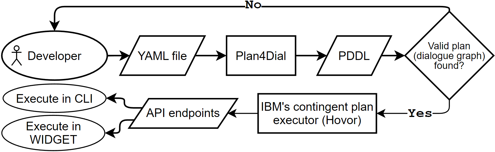

Plan4Dial
Why Use Plan4Dial?
Dialogue planning uses automated planning to generate dialogue graphs, which eliminates the need to painstakingly craft these graphs by hand and creates robust and maintainable agents. Plan4Dial is the first open and readily available modern framework for dialogue planning development.
With just one user-specified YAML file as input, Plan4Dial offers:
Direct translation to PDDL, eliminating the need to tediously handwrite PDDL
Full specification + training of an NLU model through Rasa’s NLU-only interface, along with custom pipeline components
The ability to specify how individual entities are extracted (example here)
Support for custom action templates
The ability to run and deploy agents through our extension of IBM’s Hovor and our embeddable web UI, WIDGET
Support for custom outcome determiners (created in Hovor)
The declarative nature of Plan4Dial allows you to get a chatbot running quickly and throw in new actions and variables at any point in development.
Framework Flow
Here we detail the design flow of our approach.
First, the developer writes a YAML file (example YAML file here) which contains a declarative description of their agent. The file is then passed to Plan4Dial, which converts the file to raw PDDL and attempts to generate a plan. The valid plan, if found, is then passed to Hovor to execute the conversation, either through the CLI or through WIDGET (which calls the endpoints defined in Hovor).
See the Tutorial for an in-depth explanation on how to specify the YAML file.
🤖 Time to get chatting! 🤖